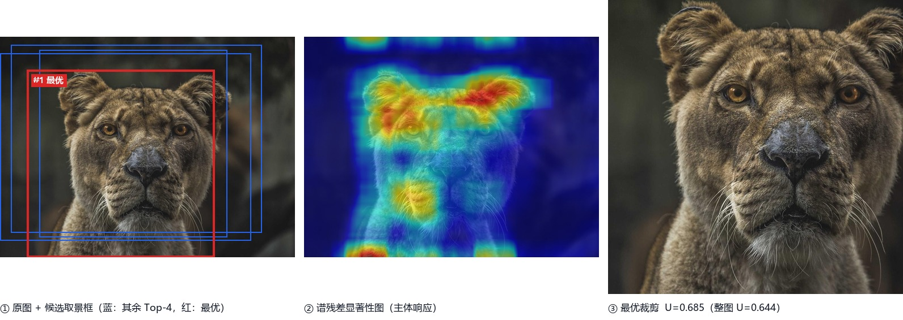
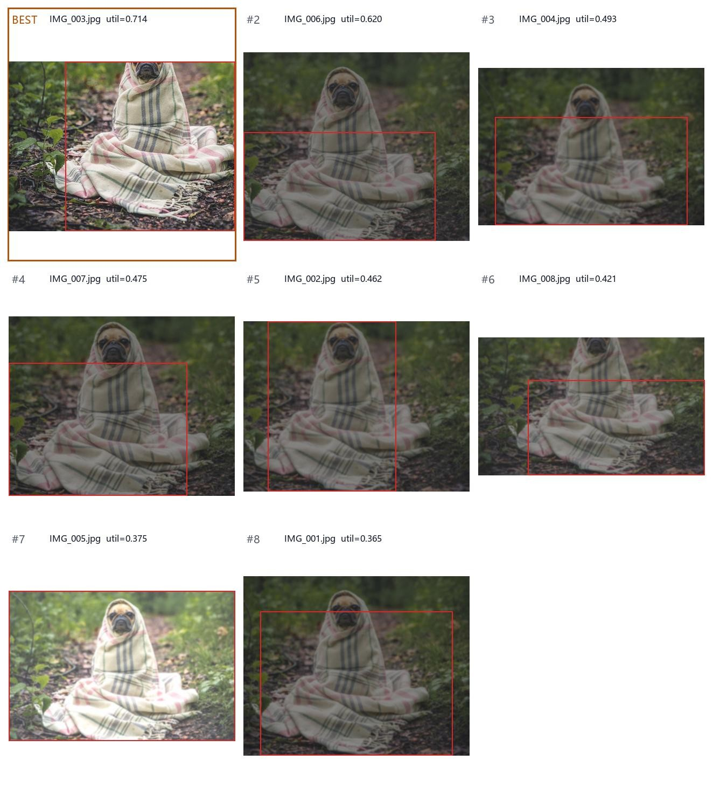

| 项目名称 | FramePick · 智能选片与取景框优化系统 |
|---|---|
| 课程 | 机器视觉（2026 秋季） |
| 组长 | 蒋锦宏 202493006 |
| 组员 | 张满 202493002 |
| 组员 | 章丞轩 202493001 |
| 代码仓库 | github.com/xiaopojiuguan/framepick |
| 提交日期 | 2026 年 11 月 |
手机与相机的连拍让"同一场景拍很多张"成为常态，而人从中挑一张的过程（选片）既耗时又依赖经验。本报告把选片形式化为组内相对排序问题：给定同一场景的 n 张照片，输出组内质量排序、最优的一张以及它的最优取景框。我们指出该任务与常规图像美学评价（IAA）的关键差异——同组照片在绝对美学分上高度趋同，因此必须建模相对偏好而非绝对分数。
系统采用"候选生成—候选评价—组内排序"三段式架构：以谱残差显著性给出主体位置先验，用宽高比 × 面积比例 × 构图锚点三路生成候选取景框并做 IoU 抑制；用技术质量、美学模型、构图规则、多模态大模型四类评分器给出多维证据；再以 Bradley-Terry 模型把成对偏好学成融合权重，完成组内排序。目前已实现可运行原型（纯 numpy/PIL 即可跑通全链路），在合成连拍数据上 Top-1 与人工首选一致率 2/2，并配套了自建数据标注工具与训练脚本。报告最后给出数据采集标准、标注协议、评价指标与六组实验计划。
课程给出的场景是：春夏之交，人们用镜头记录身边的美好生活。同一场景常会连拍多张——花海里换了几个角度、操场上抓了几个瞬间、街角等了一次光线。整理照片时，人要在这一组相似照片里做选择：哪一张最值得保留。
这一选择是"视觉质量 + 画面美感 + 瞬间价值"的综合判断，且高度依赖上下文：单看一张"还行"的照片，和同组里"对焦虚了"的那几张放在一起，就显得很好。这正是本任务与经典美学评价的分水岭。
设同一场景的一组照片 S={I1,…,In}，每张照片允许的取景框集合为
其中 A 为允许的宽高比集合。系统需要求
并输出：
其中 φ(·) 是候选框的特征表示，U(·;S) 强调效用是相对于本组 S 计算的——这是本方案的核心设计。
Chang 等人（SIGGRAPH 2016）在其照片分诊（photo triage）工作中给出了清晰证据：对同一场景的连拍，绝对美学模型会给几乎相同的分数。
原因有三：
我们实测也复现了这一现象：直接用启发式美学分对同组 8 张打分，分差被压缩在 0.05 以内，排序几乎随机；引入组内标准化后，同一批照片的效用差拉开到 0.4 以上（见 §5.2）。结论：本任务的建模对象应是"组内相对偏好"，绝对美学模型只作为其中一路证据。
| 难点 | 具体表现 | 本方案的应对 |
|---|---|---|
| 组内差异小 | 绝对分数趋同，排序不稳定 | 组内标准化 + 成对偏好学习 |
| 搜索空间大 | 取景框组合为 O(W2H2) | 构图先验注入 + 网格滑窗 + NMS，压到数十个候选 |
| 美学多义 | 不同人偏好不同、同一人不同时刻也不同 | 分布预测（NIMA 的均值+方差）、成对标注优于绝对打分 |
| 语义相关 | "闭眼""表情崩了""有人闯入"无法用低层特征判断 | 多模态大模型做语义复核 |
| 端侧约束 | 一组 10 张要在秒级内出结果 | 级联：便宜的规则先筛，贵的模型只评决赛选手 |
课程要求覆盖"图像美学评价 / 图像编辑 / 图像偏好学习 / 排序学习"中的至少一种，以及多模态大模型路线中的一种。我们全部四条都做了调研，并在系统中各取所长；其中偏好学习与排序学习是方法主干，美学评价提供单图质量证据，图像编辑负责候选生成与预处理，多模态大模型负责语义复核与理由生成。
发展脉络可以概括为三代：
数据集：AVA（255k 张，1~10 分分布，66 类语义 + 14 种摄影风格）是训练标配；TAD66K（66k 张，按主题划分）用于检验跨主题泛化；AADB（10k 张，5 人打分 + 属性）适合属性级分析；SPAQ（11k 张手机拍摄）最接近"随手拍"域。
在系统中的角色：作为 φ 中的 aesthetic 维度，以及 NIMA 方差作为"争议度"惩罚项。局限：训练集以专业摄影师作品为主（AVA 的已知 bias），对本任务常见的"日常生活随拍"存在域偏移，因此不能单独决定排序。
与选片最相关的编辑是构图编辑（裁剪）：
在系统中的角色：①候选取景框的生成方式直接继承裁剪文献（多宽高比 + 多尺度 + 显著性引导）；②可选预处理模块做曝光归一化。取舍：我们没有做生成式外扩，因为选片任务的输出应是"这张照片里最好的一框"，而不是"一张新照片"。
这是与本任务最贴合的路线。
在系统中的角色：训练目标就是 BT 似然；标注协议也按"成对/排序"设计，而不是"打 1~10 分"。
在系统中的角色：我们用 pairwise（BT）作为主训练目标——它对标注最友好（只需"A 比 B 好"），且在小组（5~20 张）上样本量足够（一组 8 张即 28 个成对样本）。评测指标同时报告 pairwise accuracy、Top-1 命中率、NDCG@3 与 Kendall τ，其中 NDCG@3 最贴近真实使用（人只看前 3 张）。
GPT-4o、Qwen2.5-VL、InternVL2.5、GLM-4V 这一类模型带来了三种新能力：
已知问题（直接影响工程实现）：
在系统中的角色：级联第二阶段——只对规则筛出的 Top-3 做 VLM 复评，权重占 25%，同时把它的理由作为解释的一部分。这样每次选片只需 3 次 API 调用，成本可控。
| 路线 | 代表工作 | 优点 | 局限 | 本项目用法 |
|---|---|---|---|---|
| 美学评价 | NIMA, MUSIQ, CLIP-IQA | 单图质量判断成熟、有开源权重 | 绝对分数、组内趋同、域偏移 | 提供 aesthetic 维度 + 争议度 |
| 图像编辑（裁剪） | VFN, GAIC, RL-Crop | 直接产出候选框、可解释 | 多为单图、忽略组内上下文 | 候选生成 + 曝光预处理 |
| 偏好学习 | ATF, Bradley-Terry, RLHF RM | 直接优化"人更喜欢哪个" | 需要成对标注 | 主训练目标 |
| 排序学习 | RankNet, LambdaRank, ListNet | 有成熟指标与损失 | listwise 标注成本高 | 组内排序与评测 |
| 多模态大模型 | GPT-4o, Qwen2.5-VL | 语义强、可解释、零样本 | 贵、位置/分辨率偏差、分数饱和 | 决赛复评 + 理由生成 |
选型结论：以"规则特征 + 美学模型"做召回与初筛，以"成对偏好学习"做组内排序，以"多模态大模型"做语义复核与解释。这是一个精度、成本、可解释性三者平衡的组合，也避免了对单一模型的过度依赖。
两个关键点值得单独说明：
候选生成的目标是"用几十个框覆盖住人可能选的那些框"，而不是穷举。我们采用三路合成：
(1) 整图基线。 相当于"不裁剪"，保证系统永远有一个安全解，也避免"为了构图把主体裁掉"的失败模式。
(2) 网格滑窗。 对每个宽高比 a∈{1:1,4:3,3:4,3:2,2:3,16:9,9:16} 与每个面积比例 s∈{0.55,0.70,0.85,1.0}，取该比例下能画出的最大内接框，按 5×5 网格平移。候选数上界为 | A|×|S|×(G+1)2=7×4×25=700，实际经 NMS 后保留 32 个。
(3) 构图锚定。 这一步是"把先验直接注入候选集"：把显著性主体分别锚定到 4 个三分点与中心点，反解窗口位置。这样"教科书式构图"的框必然在候选集内，无需指望评价器自己"想出"好构图。这也符合摄影实践——人取景时先看主体落在哪，再决定留多少空间。
候选打分与去重：每个候选按
排序，再做 IoU >0.88 的贪心抑制，取前 32 个。三项分别对应"主体在框内""位置合乎构图""面积别太离谱"。
复杂度：候选打分用积分图实现，单框 O(1)，整张图 O(| A||S|G2)，与图像分辨率无关；在 1024 长边下，单图候选生成约 20 ms（CPU，Python）。

图 1 中有两点值得注意：(a) 候选框在主体周围密集分布、而在天空/背景区域几乎不出现，说明显著性质量这一先验项起了作用；(b) 红色最优框只比整图小一圈（面积为整图的 54%）——系统没有为了"显得构图更好"而激进裁切，因为主体完整度与留白两项对过度裁切有惩罚。
四类评分器，全部输出 [0,1]，语义可解释：
① 技术质量（6 项）
| 指标 | 实现 | 归一化 |
|---|---|---|
| 锐度 | 拉普拉斯响应方差 Var(∇2 I) | 1-e-var/0.0015 |
| 曝光 | 平均亮度偏离 0.45 的程度 + 高光/暗部溢出率 | exp(-( I-0.45)2/0.302)-2(cliphi+cliplo) |
| 对比度 | 亮度标准差 | 1-e-σ/0.18 |
| 色彩 | Hasler-Süsstrunk colorfulness | C/65 |
| 噪声 | Immerkær 快速估计 | 1-σ/0.06 |
| 信息量 | 亮度直方图熵 | H/log2 32 |
② 美学模型。优先使用 CLIP 线性美学头（LAION-Aesthetic 风格），退化时用 CLIP-IQA 提示词法，再退化到规则式美学分 0.42 q+0.30 c+0.18 color+0.10 subject。三级降级保证任何环境下都能跑。
③ 构图规则（10 项）。三分/居中、主体完整度（主体包围盒落在框内的比例）、留白（主体到框边的最小距离）、主体占比、左右与上下显著性平衡、左右对称性、边缘杂乱度、地平线倾斜。其中主体完整度是最重要的失败模式护栏——它专门惩罚"把脑袋裁掉"的框。
④ 多模态大模型。对候选框用固定 rubric 提问（清晰度/曝光/构图/瞬间/综合），CoT 后输出 JSON，并要求与"普通手机随手拍 = 5 分"这个锚点比较，以缓解分数饱和。
(1) 第一阶段——图内选框。 对每张图的候选集做绝对加权：
取最大者作为该照片的代表框。这一步的"绝对"是刻意的：构图规整度本来就是绝对概念。
(2) 第二阶段——组内排序。 对 n 张照片的代表框特征做组内 z-score：
再做加权融合得到效用 Ui 并排序。组内标准化消除了"这台手机拍出来整体偏暗"之类的场景级偏移，让模型只在组内差异上做判断。
(3) 权重怎么来。 冷启动用摄影经验赋权（质量 0.30 / 美学 0.26 / 构图 0.30 / 主体 0.14）；有标注后用 Bradley-Terry 从成对偏好中学习：
学到的权重绝对值排序本身就是一份"人到底在意什么"的答案，可直接写进答辩。
(4) 级联复核。 对 Top-3 调用多模态大模型，最终效用 U'=(1-β)U+β UVLM，β=0.25。模型给出的理由与规则描述拼在一起，形成"模型判断 + 规则佐证"的双通道解释。
(5) 输出。 排名、最佳框（原图坐标）、各维分数、理由、Top-K 备选，全部写入 JSON，便于复现与展示。
| 决策 | 选择 | 理由 | 放弃的方案 |
|---|---|---|---|
| 任务建模 | 组内相对排序 | 绝对分数在同组内不可分 | 单图美学回归后排序 |
| 候选生成 | 先验注入 + 滑窗 | 保证好框在候选集内，可解释 | 纯强化学习搜索（慢、不可解释） |
| 评价 | 多路证据 + 学习融合 | 单一模型都有明显偏置 | 端到端大模型打分 |
| 排序 | Bradley-Terry | 标注成本最低、样本效率高 | ListNet（需完整排序标注） |
| 解释 | 规则 + VLM 双通道 | 规则永远说得清，VLM 补语义 | 只靠 VLM（幻觉风险） |
| 成本 | 级联 | 一组 10 张只调 3 次 API | 全量 VLM（贵且慢） |
设一组 n 张图，单图候选数 K=32，长边 L=1024。
纯本地方案一组 10 张约 1.5 s（单核 CPU），可以做成手机端"拍完立刻给建议"的形态；开启 VLM 后约 5 s，适合在相册整理场景离线跑。
公开数据（用于预训练与横向对比）
| 数据集 | 规模 | 用途 |
|---|---|---|
| ATF Photo Series (SIGGRAPH 2016) | 15,545 张 / 5,953 组 | 与本任务同构的组内偏好基准，作为主对比 |
| AVA | 255,530 张 | 训练/微调 NIMA 美学头 |
| TAD66K | 66,000 张 | 检验跨主题泛化 |
| SPAQ | 11,125 张 | 检验手机随手拍的域偏移 |
自建 SeriesSet（主力评测集）
公开数据集中"同一场景连续拍摄"的组很少，也不含我们的校园/街拍场景，因此自建：
需要，而且标注质量决定上限。 我们的标注协议：
tools/label_tool.py（本地 HTTP 服务，浏览器点选名次即可，输出即训练格式），已随仓库提供。相比部署 Label Studio，节省了大量环境配置时间。弱标注补充：对公开数据集，可从社区行为（收藏数/点赞数）构造弱偏好对，用于预训练，再由小规模人工标注微调——这是 RLHF 里成熟的"预训练奖励模型 + 人工精标"范式。
| 指标 | 定义 | 为什么用它 |
|---|---|---|
| Top-1 命中率 | 系统首选 == 人工首选 | 最直观，直接对应"选对了没有" |
| Pairwise Acc | 随机取一对，系统排序与人工一致的比例 | 对标注噪声最鲁棒，ATF 也用这个 |
| NDCG@3 | 前 3 名按相关度加权的折扣增益 | 贴近真实使用（人只看前 3 张） |
| Kendall τ | 完整排序与人工排序的一致性 | 衡量整体排序质量 |
同时报告人类上限（不同标注员之间的 τ），避免把"人都没共识"的组算成模型错误。
| 编号 | 实验 | 目的 | 对比对象 |
|---|---|---|---|
| E1 | 基线：绝对美学分直接排序 | 复现"绝对分数失效" | NIMA / CLIP-IQA / 规则分 |
| E2 | + 组内标准化 | 验证相对化的收益 | E1 |
| E3 | + 构图特征 | 验证构图先验的作用 | E2 |
| E4 | + 候选取景框（本文完整方案） | 验证"选框"是否比"选图"更好 | E3 |
| E5 | + VLM 级联复评 | 验证语义复核的边际收益 | E4 |
| E6 | 消融：候选数量 K、网格密度 G、融合权重 | 找性价比拐点 | 网格搜索 |
| E7 | 跨域：训练用 AVA，测试用自建 SeriesSet | 检验域偏移 | 域内 vs 跨域 |
预期结论（待验证）：E1→E2 应有最大跃升（这是方法的核心假设）；E4 的增益取决于组内构图差异；E5 主要在含人物表情的组上有明显提升。
| 阶段 | 时间 | 任务 | 负责人 |
|---|---|---|---|
| 期中（已完成） | 10/20—11/03 | 调研、方案设计、原型跑通、仓库搭建 | 全员 |
| M1 数据 | 11/04—11/17 | 采集 ≥ 30 组、标注协议落地、标注完成 | 张满（采集）＋章丞轩（标注工具与质检） |
| M2 模型 | 11/11—11/24 | 接入 NIMA / CLIP 美学头，跑 E1~E3 | 蒋锦宏 |
| M3 排序 | 11/18—12/01 | BT 训练、权重分析、E4~E6 消融 | 蒋锦宏＋章丞轩 |
| M4 系统 | 11/25—12/08 | Gradio 演示、端侧性能优化、VLM 级联 | 张满 |
| M5 交付 | 12/09—12/20 | 报告、答辩材料、Demo 视频、代码整理 | 全员 |
仓库 framepick/ 已是一个可运行的原型，只依赖 numpy 与 Pillow 即可跑通全链路（深度模型为可选增强）：
| 模块 | 文件 | 状态 |
|---|---|---|
| 谱残差显著性 | src/framepick/saliency.py |
✅ |
| 候选生成 + NMS | src/framepick/candidates.py |
✅ |
| 技术质量 / 构图特征 | src/framepick/features.py |
✅ |
| 融合与组内标准化 | src/framepick/fusion.py |
✅ |
| Bradley-Terry 排序器 | src/framepick/ranker.py |
✅ |
| 端到端流水线 | src/framepick/pipeline.py |
✅ |
| 评分器适配器 | src/framepick/scorers/ |
🚧 NIMA / CLIP / VLM 已写，待接权重与 Key |
| 标注工具 | tools/label_tool.py |
✅ |
| Gradio 演示 | app/gradio_app.py |
✅ |
| 真实照片验证与配图 | scripts/make_real_figures.py |
✅ |
| 单元测试 | tests/test_pipeline.py |
✅ 8 项全通过 |
由于真实连拍数据仍在采集中，我们先构造了一组合成"连拍"做冒烟测试：同一背景（天空/山脊/草地/小路），主体位置、曝光、模糊强度按预设扰动，并记录"人工首选"作为 ground truth。
运行：
python scripts/make_demo_data.py # 生成 2 组 × 8 张
python scripts/run_demo.py --all # 跑流水线并出拼图
结果（series_01）：
| 名次 | 文件 | 效用 | 质量 | 美学 | 构图 |
|---|---|---|---|---|---|
| 1 | IMG_001.jpg | 0.721 | 0.71 | 0.57 | 0.71 |
| 2 | IMG_003.jpg | 0.607 | 0.61 | 0.53 | 0.73 |
| 3 | IMG_002.jpg | 0.582 | 0.60 | 0.52 | 0.74 |
| 4 | IMG_005.jpg | 0.568 | 0.64 | 0.53 | 0.72 |
| 5 | IMG_008.jpg | 0.474 | 0.57 | 0.50 | 0.76 |
| 6 | IMG_004.jpg | 0.453 | 0.57 | 0.50 | 0.72 |
| 7 | IMG_006.jpg | 0.357 | 0.52 | 0.48 | 0.74 |
| 8 | IMG_007.jpg | 0.252 | 0.56 | 0.47 | 0.64 |
Top-1 命中率 2/2。系统给出的理由示例：
组内最优：主体居中、画面稳定，焦点锐利，曝光正常，主体完整未被裁断。
值得注意的是效用的区分度：最好与最差相差 0.47，而原始美学分只差 0.10——这正是组内标准化在起作用。
§5.2 的合成场景只能验证流程是否跑通（纹理是画出来的，噪声结构过于理想）。为了确认结论在真实像素上依然成立，我们改用真实照片作底：取一张真实拍摄的照片，按"同一场景连拍"的物理规律生成 8 张——取景窗口小范围平移、曝光 ±30%、对比度下降、不同强度的失焦与高感噪点；其中第 3 张为干净的一张（主体锚定三分点、曝光准确、合焦），作为"人工首选"。
python scripts/make_real_figures.py # 合成连拍 + 跑流水线 + 出报告配图

结果：Top-1 与人工首选一致，效用 0.714 对末位 0.365，区分度 0.348。分项上看，系统第 1 名在质量（0.77）与构图（0.69）两项同时领先，而失焦/过曝的几张质量分普遍在 0.5 附近——这与人的判断一致，说明技术质量层确实在起筛选作用。
与 §5.2 对比，这张图还暴露了一个值得写进后续工作的问题：红框的位置并不总是"更好"。第 7、8 两张本身已经过曝/失焦，系统仍会在其内部挑一个相对最好的框——照片级的缺陷无法靠框内构图补救。这正是两阶段设计的边界：第一阶段（图内选框）只解决"怎么裁"，第二阶段（组内排序）才解决"留哪张"。
scale 显式换算。| 风险 | 影响 | 对策 |
|---|---|---|
| 自建数据量不足（<300 张） | 训练权重不可靠 | 用 ATF 公开基准做预训练，自建数据只做微调与评测；优先保证组数而非张数 |
| 标注一致性低（τ<0.6） | 评测失真 | 引入仲裁与"人类上限"基线；对小差异组降低权重 |
| 美学模型不可用（无 GPU/无权重） | 精度下降 | 三级降级机制已实现，最差也能用规则特征跑通 |
| VLM 接口不稳定/费用 | 演示失败 | 级联 + 缓存 + 超时降级；答辩现场提供离线结果 |
| 手机端性能不达标 | 无法演示端侧 | 候选生成已与分辨率解耦；必要时把特征计算降到 720p 长边 |
| 过度依赖构图规则 | 风格化作品被误杀 | 规则分只做加权项而非硬约束；引入属性化解耦（分离"技术"与"审美"） |
| 成员 | 学号 | 期中阶段承担 | 后续主责 |
|---|---|---|---|
| 蒋锦宏（组长） | 202493006 | 任务定义、方法调研、系统架构、流水线与排序器实现、报告统稿 | 模型与排序（M2/M3） |
| 张满 | 202493002 | 数据方案设计、合成演示数据、可视化与联系表、Gradio 界面 | 数据采集与系统优化（M1/M4） |
| 章丞轩 | 202493001 | 标注协议、标注工具开发、特征与指标核验、单元测试 | 标注质检与消融实验（M1/M3） |
framepick/
├─ README.md 项目说明与快速开始
├─ requirements.txt 最小依赖（numpy + pillow）
├─ pyproject.toml 安装与入口点（framepick 命令）
├─ configs/default.json 默认配置
├─ src/framepick/ 核心库
│ ├─ saliency.py 谱残差显著性
│ ├─ candidates.py 候选取景框生成
│ ├─ features.py 技术质量 / 构图特征
│ ├─ fusion.py 融合与组内标准化
│ ├─ ranker.py Bradley-Terry + 指标
│ ├─ pipeline.py 端到端流水线
│ ├─ explain.py 可解释性
│ ├─ visualize.py 联系表输出
│ ├─ cli.py 命令行
│ └─ scorers/ NIMA / CLIP / VLM 适配器
├─ scripts/ 演示数据、跑通脚本、训练排序器
├─ app/gradio_app.py Web 演示
├─ tools/label_tool.py 零依赖标注台
├─ tests/ 单元测试
├─ data/README.md 数据方案说明
└─ docs/设计报告.md 本报告
git clone https://github.com/xiaopojiuguan/framepick && cd framepick
pip install -e . # 或 pip install -r requirements.txt + PYTHONPATH=src
python scripts/make_demo_data.py # 生成合成连拍
python tests/test_pipeline.py # 8 项单元测试
python scripts/run_demo.py --all # 端到端 + 联系表
python scripts/make_real_figures.py # 真实照片验证，复现图 1 / 图 2
framepick --input data/sample/series_01 --out outputs/run01 --sheet